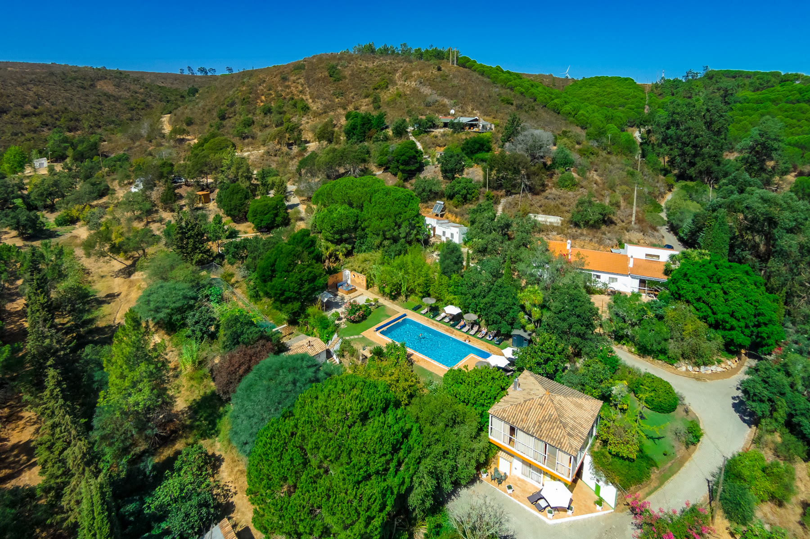
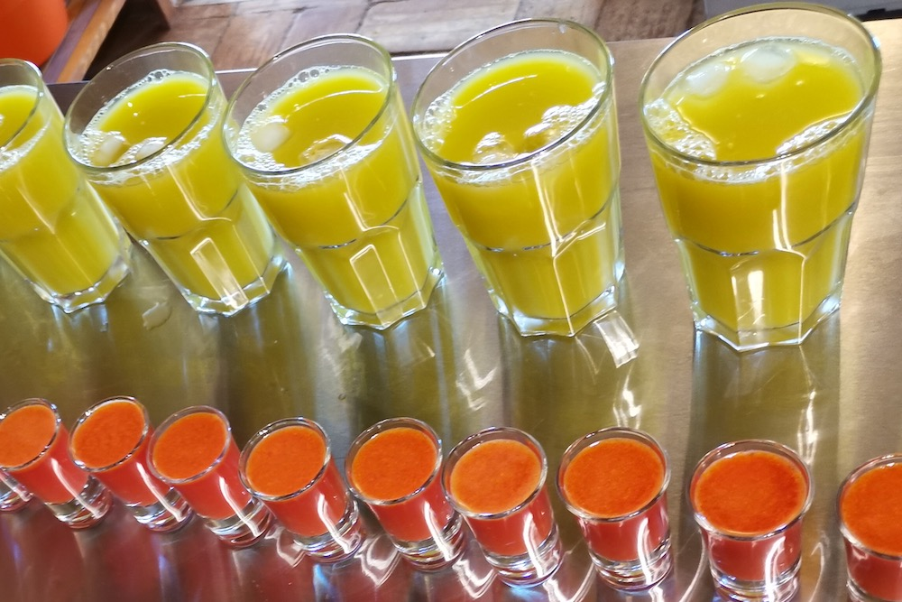
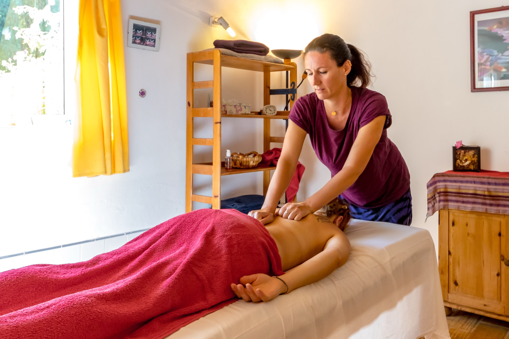
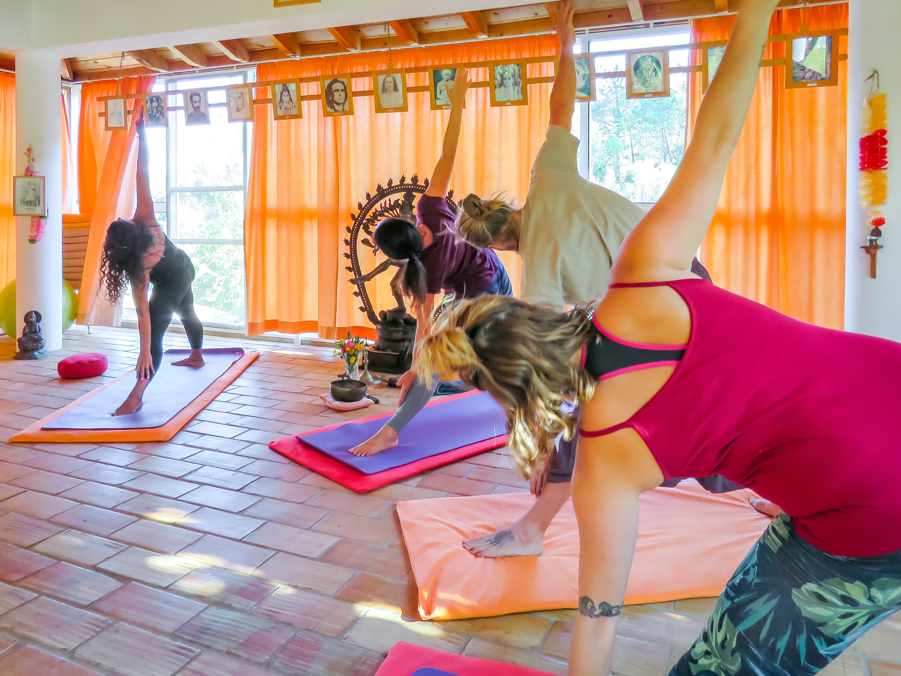
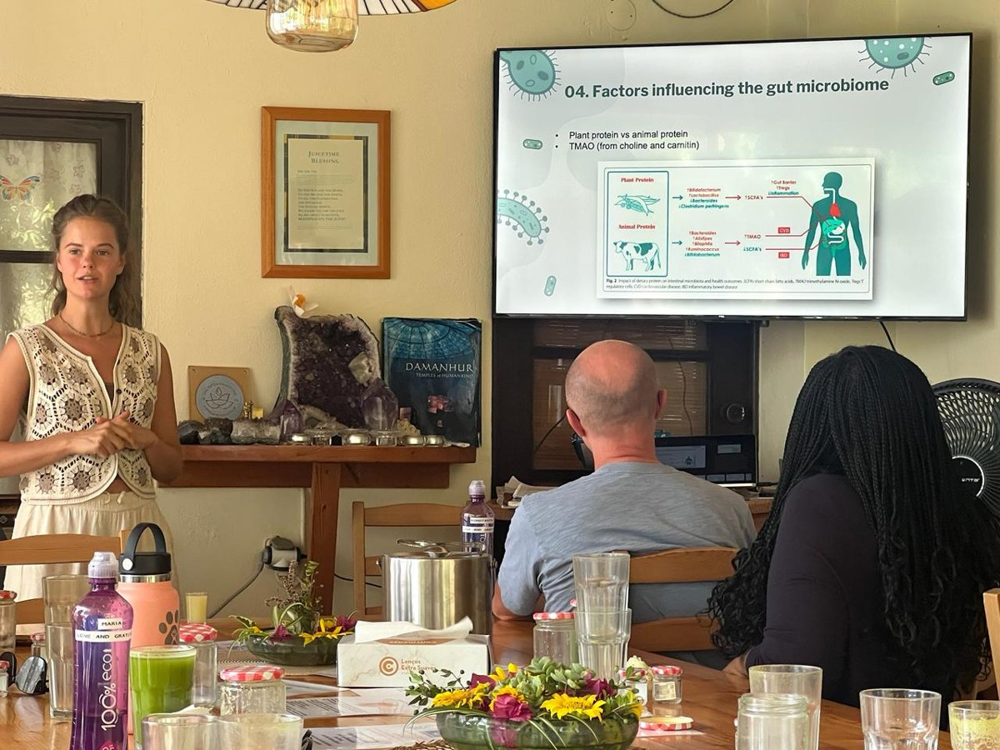
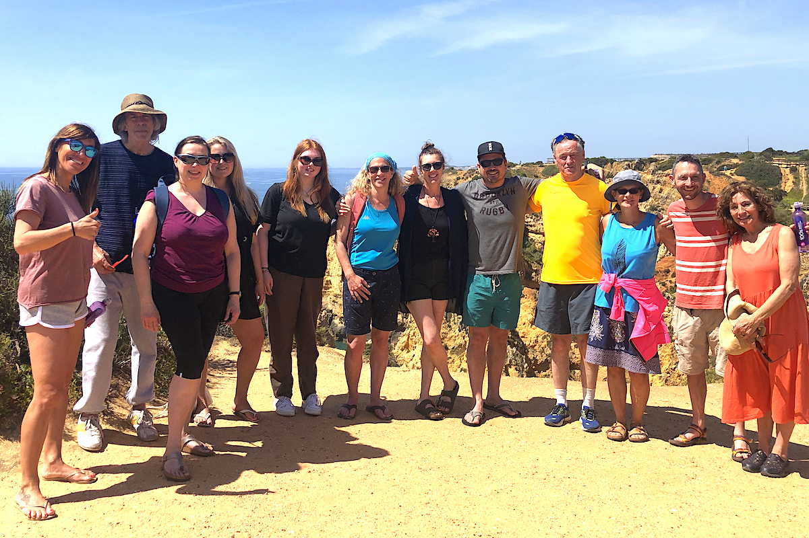

The programme
Juice detox, yoga & wellness
What we do
A structured week for body, mind and spirit
A juice detox retreat here means stepping away from solid food for a week or two, inside a programme built around that choice rather than in spite of it. The approach draws on decades-old thinking about fasting and cleansing — Bernard Jensen and Dr Gerson among the early influences — refined since 1992 into something far more current.
In practice, that means juices and broth every few hours, daily yoga, evening meditation, and long unstructured stretches in between. The body gets the rest it needs to do its own clearing; the mind gets an equally serious break.

A day at Moinhos Velhos
The rhythm your body remembers
Every day of the programme follows the same gentle structure — nourishment every three hours, movement each morning, stillness each evening. It sounds simple because it is; the effect compounds over a week far more than any single day suggests.
07:00
Wake with the valley
No alarms blaring, no rush. A gentle knock, warm lemon water, and a few quiet minutes before the day properly begins — most guests say this is the first time in years they've woken up unhurried.
08:00
Morning yoga in the temple
An all-levels practice in the open-sided temple above the gardens, shaped over three decades to meet whoever shows up. Beginners and seasoned yogis move at their own pace side by side.
10:00
First juice
Freshly pressed to the season — never the same blend twice across your stay. Afterwards the morning opens up: a therapy appointment, a workshop, or simply time by the pool.
10:45
Optional therapies
Including deep tissue massage, acupuncture and Bowen — booked session by session with the therapists in residence that week. Take what your body asks for; skip what it doesn't.
13:00
Midday juice
The valley is at its warmest, so the middle of the day tends to be the quietest — a second juice, a rest in the shade, or a walk out towards the reservoir.
13:45
Optional therapies
Including Inspirational Healing, CQM, reflexology and Reiki — a second treatment window in the quiet of early afternoon.
16:00
Afternoon juice & workshop
Your third juice of the day, often paired with a nutrition or wellness workshop. Later in the afternoon the sauna lights up and the pace slows further.
19:00
Evening broth
A warm, mineral-rich vegetable broth — the one savoury note in the day, and the point where everyone gathers again after an afternoon spent quietly apart.
19:45
Meditation or workshop
Sound baths, mindfulness, meditation, Yoga Nidra, movement, dance and fire ceremonies. Afterwards, there's time to connect with fellow guests, enjoy a tea or simply unwind.
The film
A week here, seen through two guests
Follow Erica and Doc through their seven days — the juices, the yoga, the quiet in-between hours, and the morning the bell rings to break the fast.

What’s included
One programme fee, nothing held back
Your fee covers the full programme, start to finish. The only extras are optional specialist therapies such as massage or acupuncture, booked separately with our therapists.
- Freshly pressed juices, evening broth, lemon water & herbal teas all day
- Your initial health check-in with our team
- Daily yoga class
- Evening meditation or workshop
- Use of the QRS electromagnetic bed
- Use of our parasite-zapper equipment
- Full use of the salt-water pool
- Full use of the wood-fired Finnish sauna
- Access to the gardens and grounds
- A weekly day trip to the beach or Lagos
- Internet access throughout your stay
- Free pick-up from Lagos
Between the juices
Fill the quiet hours with treatments
The rhythm leaves long, unhurried stretches between nourishment — and most guests fill them from our optional therapy menu. A massage after morning yoga, acupuncture before the afternoon juice, reflexology by the pool: the week takes shape around what your body asks for.
Every optional treatment is €75 for a one-hour session, and you book them once you’re here — after your check-in, our therapists will happily suggest what would serve your detox best.

The clinic’s three therapy rooms sit just past the yoga temple.

Yoga & meditation
Practice that meets you where you are
Classes are genuinely all-levels — taught the same way whether it's your first class or your five-hundredth, and shaped over the years to meet the room rather than follow a fixed script. The temple itself, hung with images of forty ascended masters, is often described by guests as the quietest room they've ever stood in.
The temple
Open to the gardens on every side, and by common agreement the heartbeat of the site alongside the juice kitchen.
Fire ceremony
An evening ritual — a chance to name what you're ready to let go of, out loud or in silence.
Spiral walk
A slow walking meditation through the garden's spiral path — turning inward, quite literally, one step at a time.
Workshops
Learning that outlasts the week
Alongside the daily rhythm, a rolling programme of workshops gives you tools to take home — not just a week of feeling better, but a handful of habits worth keeping.

Nutrition & wellness
Sessions with our in-house nutrition team on what to eat — and how to think about food — once you're home.
Practical self-care
Hands-on workshops in the neti pot, dry skin brushing and tongue scraping — small daily habits with an outsized effect.
Body-mind connection
Movement and reflection sessions exploring how what we carry physically so often mirrors what we carry emotionally.

Once a week
A day trip to the coast
Once a week the programme pauses for a trip out — to one of the Algarve's beaches on the west or south coast, or into Lagos itself. It's a welcome change of scenery, and a reminder that the retreat sits inside a genuinely beautiful stretch of coastline, not apart from it.
Who it’s for
All ages, all levels, genuinely
Guests arrive from their twenties to their eighties, first-timers alongside people on their tenth visit. Nobody is required to attempt every class or complete the fast perfectly — our approach is deliberately permissive. You choose how much of the programme to engage with, and the team adjusts around you rather than the other way round.
- No yoga experience required
- No obligation to fast perfectly
- Set your own pace, every day
Investment
From €1,250 for a full week
Retreats run 7 or 10 nights, with accommodation from shared twin bell tents to premium singles in the old mill. A €350 deposit secures your place, with the balance due 14 days before you arrive.
Ready to begin your reset?
Check live availability, choose your room, and reserve your place with a €350 deposit. It takes about five minutes.